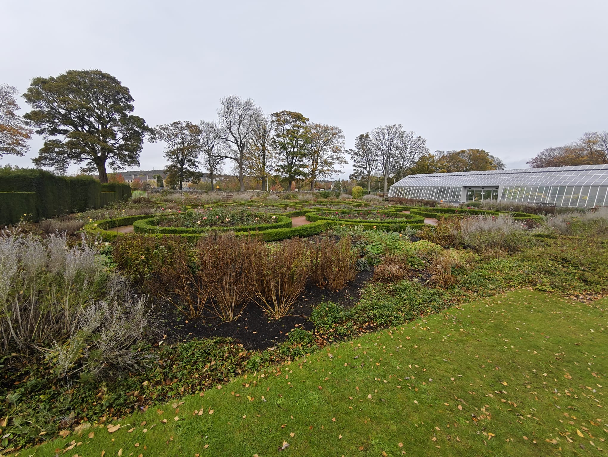

Study Area Gallery
Exploring the Water of Leith catchment and its greenspaces


Evaluating the economic benefits of using urban greenspaces as natural flood reservoirs in the Water of Leith catchment, Edinburgh
To assess the financial benefits of flood mitigation for residential, commercial and industrial properties in the Water of Leith catchment by using upstream greenspaces as natural flood reservoirs during a 1-in-200-year flood event.
The Water of Leith catchment encompasses 73 km² of potentially vulnerable areas. In 2000, flooding inundated over 1000 properties. This research evaluates green reservoir solutions that intercept and store flood volumes to protect downstream settlements.
By integrating hydrological assessments, financial damage calculations, and social vulnerability analysis (SIMD), this project provides a comprehensive framework for evaluating nature-based flood solutions.
Exploring the Water of Leith catchment and its greenspaces
Multi-source data integration including NRFA time series data for flood estimation, OS building footprints, SEPA 1/200-year flood extent, 2m DTM for greenspace volume calculation, and SIMD 2020 for social vulnerability assessment.
Using triangular hydrograph method with Peak Over Threshold analysis to calculate bankfull discharge (43 m³/s) and estimate flood volumes for 1-in-200-year event. Maximum flood volume: 349,650 m³.
DTM tiles were combined into a mosaic dataset and converted to TIN. A TIN-based Polygon Volume tool was used to calculate storage capacity using surface area and simulated reservoir heights (mean elevation, max 5m). Greenspaces were selected based on five measurement criteria scored 1–5, and appropriate weights were applied.
Seven greenspaces were selected with a total storage capacity of 267,321 m³.
Total Score = (Storage*0.33) + (Priority*0.16) + (Feasibility*0.16) + (SIMD*0.16) + (LandCover*0.16)
SIMD 2020 data analysed using four factors: income, employment, housing, and education. Normalised scoring and weighted averaging create a flood risk index highlighting environmental inequality.
JRC Global Flood Depth-Damage Functions applied to calculate baseline damages. Values adjusted using Cost Price Index from 2010 to 2024 prices. Avoided damage calculated using flood volume reduction coefficient. Residual Damage calculated as the damage caused by the remaining flood volume, after applying the flood volume reduction coefficient.
Interact with our comprehensive spatial database to visualise flood protection values, greenspace locations, and social vulnerability patterns.
🗺️ Launch Interactive Map